NetBeans 具有一个很好的数据库连接接口，但许多 SQL 命令是作为整个句子输入的，我创建了一个 Swing 应用程序以在 MySQL 数据库表中插入数据以及查看这些数据。该样例非常简单，仅有一个特定的表，并且不执行删除或更新操作。可以对其进行扩展，但文档恐怕会变得更长、更复杂。
我希望读者已具有适合的 MySQL 数据库服务器工作环境，并且为给定用户授予数据库的足够权限。在此样例中，
数据库名称：nonidb
用户：noniko
口令：（空）<- 因为这仅仅是一个样例而已。如果包含一些重要数据，请设置正确的口令！
此外，您还会获取一个用于 MySQL 的 JDBC 驱动程序文件。我准备了 mysql-connector-java-3.1.6-bin.jar 文件，可通过 MySQL 开发者网站获取该文件。
现在，让我们转至 NetBeans。单击 "Runtime"（运行时）标签以切换窗口，您通常看到的可能是 "Projects"（项目）或 "Files"（文件）窗口。
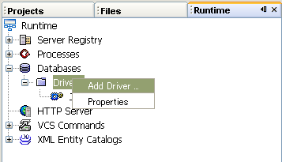
在 "Runtime"（运行时）窗口中选择 "Add Driver"（添加驱动程序）
将会在此处找到 "Databases"（数据库）节点。打开该节点以显示下面的 "Driver"（驱动程序）节点。如果打开其他节点以显示 "Driver"（驱动程序）内容，则只会找到 "JDBC-ODBC"。要执行的第一个操作是添加 MySQL 驱动程序。右键单击 "Driver"（驱动程序）节点以显示上下文菜单，然后选择"Add Driver"（添加驱动程序）。
显示设置窗口。
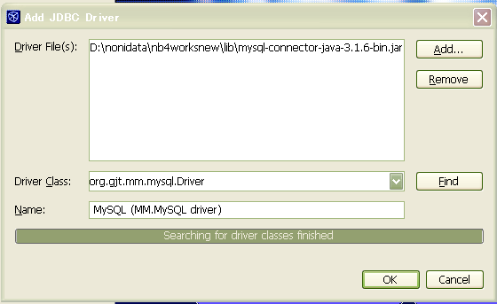
查找 JDBC 驱动程序文件位置。
通过单击 "Add"（添加）按钮，您可以按图形方式搜索驱动程序文件。对于上述情况，我准备了 D:\nonidata\nb4worksnew 文件夹以包含项目文件夹，并在 lib 子文件夹中包含库文件。
如果您选择驱动程序文件的位置，则会自动设置 "Driver Class"（驱动程序类）和 "Name"（名称）。对于 MySQL JDBC 驱动程序，先设置旧类名。但在单击 "Fins"（查找）按钮后，下面的进度栏将变为活动状态并最终显示“已完成驱动程序类搜索”。
接下来，打开 "Driver Class"（驱动程序类）设置组合框。您可以选择 JDBC 驱动程序的当前类名。
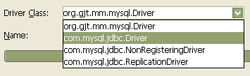
将类名更改为当前版本的类名。
单击 "OK"（确定），将在 "Drivers"（驱动程序）节点下面添加新的驱动程序节点。右键单击该节点以从上下文菜单中选择 "Connect Using.."（连接设置...）。
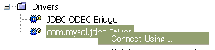
从上下文菜单中选择 "Connect Using.."（连接设置...）
显示设置窗口。需要在其中指定 "Database URL"（数据库 URL）、"User Name"（用户名）和 "Password"（口令）（此处，口令为空）。单击 "OK"（确定），您可能会在下面的进度栏中看到 "Connection established"（已建立连接）消息。页面可能会切换到 "Advance"（高级），但此处不需要指定高级设置。
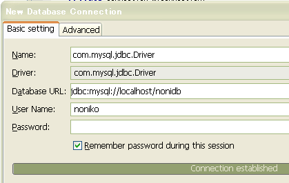
在建立连接后，将显示此连接的节点。让我们继续执行下一步。
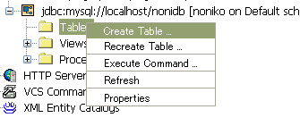
从上下文菜单中选择 "Create Table..."（创建表...）
将显示一个窗口以设置要创建的表。要显示所需的设置，可能需要手动展开该窗口。重要设置是 "Key"（键）、"Column name"（列名）、"Data type"（数据类型）和 "Size"（大小），具体取决于 "Data type"（数据类型）。
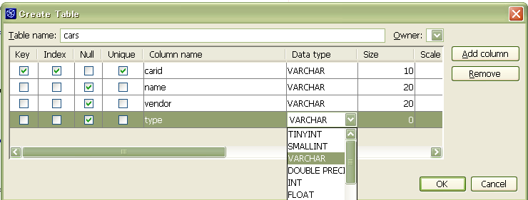
在 NetBeans 中创建表
此处，我创建了一个样例表 "cars"，它包含 carid、name、vendor 和 type 字段。carid 字段是主键。所有字段均具有 VARCHAR 数据类型。仅 carid 的大小为 10，所有其他字段均为 20。
在创建表后，您可以在连接节点下面看到其节点。将显示 "cars" 表的结构。
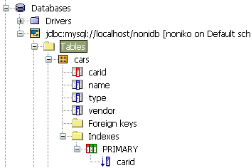
创建的表的节点树
现在，让我们发送 SQL 命令以插入第一行。右键单击连接节点下面的任何节点以显示 "Execute Commands..."（执行命令...）菜单项。
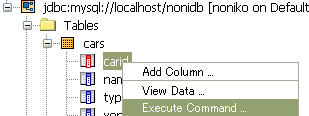
将在源代码编辑器的相同位置中显示较大的操作命令窗口。窗口太大，因此，我无法显示整个外观的屏幕快照。最重要的位置是用于输入命令的文本区域。
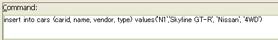
输入整个命令语句。
单击 "Execute"（执行）按钮；如果命令有效，则可以在下面看到 "Command successfully excuted"（已成功执行命令）消息。要显示更多数据以进行证实，请右键单击 "cars" 节点，然后选择 "View data"（查看数据）。
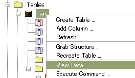
右键单击 "cars" 节点以查看数据。
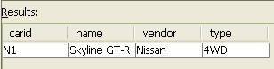
插入了第一行数据
太好了！已成功插入第一行数据。但您可能会认为整个句子“insert into...”有点麻烦。我就是这样觉得的。因此，我决定构建一个应用程序以通过更多图形操作来插入数据。
让我们为应用程序创建一个新的 Java 项目。从菜单栏中选择 "File"（文件）-> "New Project"（新建项目）。在新建项目向导中，选择 "General"（常规）-> "Java Application"（Java 应用程序）作为项目类型。我指定的项目名称是 "mysqloperation"，位置是 "d:\nonidata\nb4worksnew\mysqloperation"。取消选中 "Create main project"（创建主项目）。
在创建项目后，创建新的包。我创建的包是 "mysqlop"。
Java 中的数据库操作非常复杂，需要使用连接、语句、结果集以及许多 try 和 catch。因此，我使用一个实用程序类来处理此类操作。
MyDBConnection.java 中显示了完整代码。
init() 方法用于连接 MySQL 数据库。
getConnection() 方法在 init() 方法后面调用，用于为其他类提供建立的连接。
两个 close() 方法和 destroy() 方法用于结束操作。关闭连接、语句或结果集需要使用 try 和 catch，因此，已在此处提取了它们。
要使用该文件，必须为此项目设置 JDBC 驱动程序的类路径。右键单击 "mysqloperation" 项目，然后从上下文菜单中选择 "Properties..."（属性...）。在 "Project Properties"（项目属性）窗口中，选择 "Build"（生成）-> "Compiling Sources"（编译源代码）。单击 "Classpath for Compiling Source"（用于编译源代码的类路径）设置附近的 "Add JAR/Folder..."（添加 JAR/文件夹...）按钮，以便搜索 JDBC Jar 文件的位置。
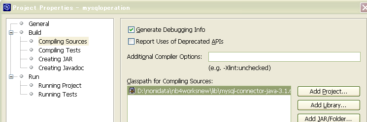
将 JDBC Jar 文件添加到类路径中
接下来，我为 JTable 准备定制表模型以在该应用程序中使用。
CarTableModel.java 中显示了完整代码。
为了编写此代码，我使用了 NetBeans 中的一些很好的工具。
首先，创建一个名为 CarTableModel.java 的新 Java 类文件。它具有一个很普通的空白模板，仅包含包和类声明。
手动编辑类声明以扩展 "AbstractTableModel" 类。随后，编辑器将显示红色波浪下划线以指示错误。出现该错误的一个原因是未导入 "javax.swing.table.AbstractTableModel" 类。可以右键单击代码中的某个位置，然后选择 "Fix Imports"（修复导入）以修复该错误。
使用 "Fix imports"（修复导入）工具
您可以检查是否将声明
import javax.swing.table.AbstractTableModel;
插入到源代码顶部附近。
但仍会出现红色下划线。出现该错误的另一个原因是未实现正确的抽象方法。
可以按以下方式调用 "Overrice Methods"（覆盖方法）工具以修复该错误：
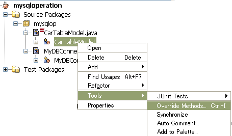
使用 "Overrice Methods"（覆盖方法）工具
选中 "Show Abstract Methods Only"（仅显示抽象方法）以提取所需的实现。

列出所需的实现
单击节点，然后选择 "OK"（确定）以选择所有三种方法。
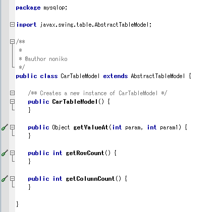
自动插入所需的实现
现在，红线消失了！
事实上，我们还需要覆盖 getColumnName(int param) 方法，否则，我们无法获取定制的表标题。
让我们填充内容。
代码指定为访问特定的 "cars" 表，因此，列数固定为 4 列。
每个列的名称也是已知的，并且可以直接设置。
这次我使用了泛型，这是 JDK5.0 首次引入的新功能。它在 NB 中正常工作（鼓掌！）
现在，让我们创建 JFrame 窗体应用程序，这是项目的主类！可以在新建向导中选择 "JFrame Form"（JFrame 窗体）。我使用的名称是 "InsertTable"，它创建一个源文件 "InsertTable.java"。
首先，设计该窗体。它应该是垂直长窗口，因此，我固定了窗体大小而不是使用“包装”。
在 "Inspector"（检查器）窗口中选择 "JFrame" 节点以显示其属性。将 "Form Size Policy"（窗体大小策略）从缺省的 "Generate pack()"（生成 pack()）更改为 "Generate Resize Code"（生成调整大小代码）。
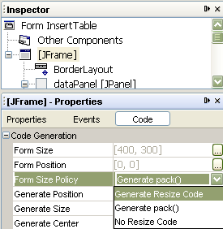
固定窗体大小。
然后，"Form Size"（窗体大小）属性将变为可编辑的属性。编辑该属性以使其变为：
编辑了窗体大小。
此窗体将垂直分为三个部分：
(1) 用于输入新数据的 JTextfield 或 JComboBox。
(2) 用于发送数据和显示消息的 JButton。
(3) JTable。
前两个部分应位于每个 JPanel 上，JTable 应位于 JScrollPane 上。这些是基本的部分。
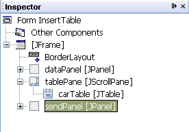
用于放置组件的 JPanel 和 JScrollPane。
请注意，节点的垂直位置并不表示其实际位置。我的意思是，dataPanel、sendPanel 和 tablePane 分别位于 BorderLayout 的北面、中心和南面。
在 dataPanel 上，应放置三个 JTextField 和一个 JComboBox 以输入数据并放置四个 JLabel 以提供说明。我认为 GridLayout 最适于设置这些位置。在 NetBeans 中，JPanel 上的缺省布局是 FlowLayout。必须对其进行更改：
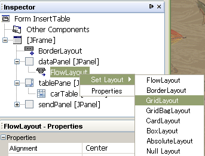
更改为 "GridLayout"
然后，将显示该 GridLayout 的属性。将列数设置为 2，将行数设置为 4。
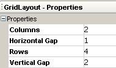
然后，放置这些组件。如果您对位置不满意，可通过拖放在窗体上移动这些组件。
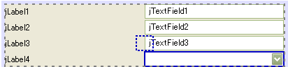
在 GridLayout 中移动 JComboBox。
组件可能会移到错误的位置而变成不同的面板。不要担心，您也可以在 "Inspector"（检查器）窗口中通过拖放来移动其位置。
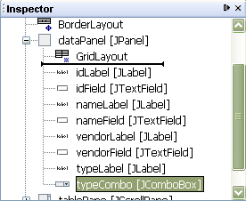
在 "Inspector"（检查器）窗口中移动 JComboBox。
在设置所有组件后，定制其名称以显示其角色。
还会定制每个 JLabel 的 text 属性，并删除 每个 JTextField 的该属性。以下示例介绍了如何编辑 JLabel 的 "text" 属性：
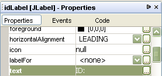
定制 "text" 属性以将 "ID:" 显示为 JLabel
然后，在 sendPanel 中放置 JButton 和 JLabel。还要为该 JPanel 设置 GridLayout 并包含一列和两行。定制名称和 "text" 属性。
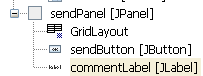
这样，将按下列方式排列 JTable 以外的组件：
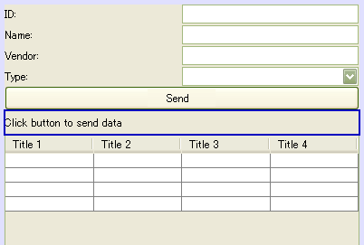
已定制 JTable 以外的组件。
如上所示，JTable 此时具有 4x4 结构和空数据。让我们定制该组件以显示 MySQL 数据库的 "cars" 表的内容。
在 "Inspector"（检查器）窗口中选择现在命名为 "carTable" 的 JTable 以显示其属性。查找 "model" 属性，然后单击右边缘的 "..." 按钮。
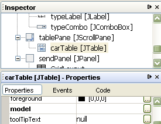
carTable 及其 "model" 属性
将显示编辑器窗口。此窗口中设置了缺省 4x4 结构。让我们将 "Select Mode"（选择模式）从 "TableModelEditor" 更改为 "FormConnection"。

从缺省的表模型编辑器切换到窗体连接模式。
在 "Form Connection"（窗体连接）模式下的选项窗口中，单击 "User Code"（用户代码）单选按钮。
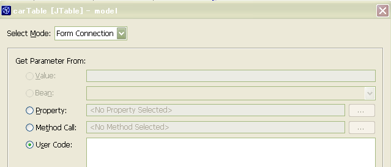
窗体连接模式
然后查看此窗口的底部。其中包含 "Advacned"（高级）按钮。单击该按钮！
位于窗口底部的 "Advacned"（高级）按钮
将显示一个窗口，以编辑为 JTable 设置 TableModel 的代码前后的内容。此时，检查这两项内容以进行编辑。
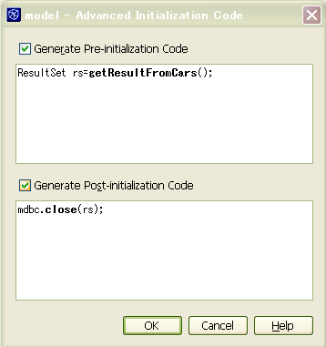
应在类似下面的 "InsertTable.java" 源代码中手动创建名为 getResultFromCars 的方法：
public ResultSet getResultFromCars() {
ResultSet rs=null;
try{
rs=stmt.executeQuery("Select * from cars");
}
catch(SQLException e){}
return rs;
}
单击 "OK"（确定），返回到 "User Code"（用户代码）以进行填充。
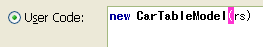
请注意，此处的分号 ";" 用于终止句子，不应作为输入内容。这是为什么呢？检查源代码。检查 InitComponents() 方法。此处！
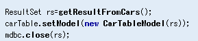
浅蓝色的区域是“受保护”而“不能编辑”的区域？这是谁说的呀？嗬-嗬-嗬！您可以通过 NetBeans 准备的这种方法任意进行编辑呀！
要第一次测试运行该定制 JTable，我们仍需要执行一些操作。首先，声明以下内容：
private MyDBConnection mdbc;
private java.sql.Statement stmt;
将在源代码中的某个位置编写这些语句。最好放在 EOF 附近，靠近其他变量。
然后声明构造函数。请注意，我们应该在其中添加抛出声明
以避免出现讨厌的编译错误“未报告 java.sql.SQLException...”。
构造函数的完整内容是：
public InsertTable() throws Exception{
mdbc=new MyDBConnection();
mdbc.init();
Connection conn=mdbc.getMyConnection();
stmt= conn.createStatement();
initComponents();
}
要避免相同的编译错误，还要执行一个操作。编辑 NetBeans 准备的 main 方法：
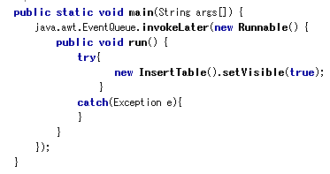
在 main 方法中添加 try-catch
现在，让我们运行项目！可能会出现一个用于选择主类的窗口。在列表中，您仅找到此 "InsertTable.class"。选择该类。
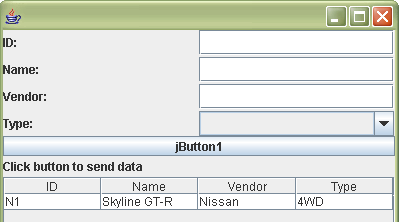
显示 MySQL 的表数据
将显示 MySQL 数据库的 "cars" 表中包含的唯一一行！
现在，我们可以在 JTable 中显示 MySQL 的现有数据，让我们稍做修改以改进应用程序。
一个操作是正确终止此应用程序，必须关闭与 MySQL之间的所有会话（连接、语句和结果集）。
将通过关闭窗口来终止此应用程序。因此，我们应该为 WindowClosing 事件添加事件处理方法。
在 "Inspector"（检查器）窗口中选择 "JFrame" 以显示其属性窗口，然后单击 "Events"（事件）以切换页面。找到 "windowClosing" 事件。缺省情况下，将其设置为 <NONE>，但在单击文字 <NONE> 时，它将自动变为 "formWindowClosing"...在选择此行时，按 Enter 键。
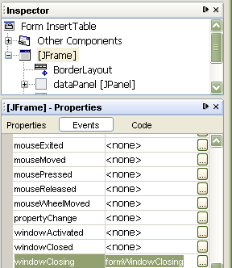
设置 JFrame 的 windowClosing 事件
将显示源代码以允许编辑该方法。
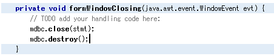
编辑 "formWindowClosing" 方法
关闭语句和连接。
另一个操作是设置名为 typeCombo 的 JComboBox 的项。是的，应设置该组件以选择汽车的驱动类型。
在 "Inspector"（检查器）窗口中选择 "typeCombo" 节点以显示其属性。找到 "model" 属性，然后单击右边缘的 "..." 按钮，就像我们为 JTable 设置 TableModel 时一样。
将显示一个窗口，这次我们使用缺省的 ComboBoxModelEditor。
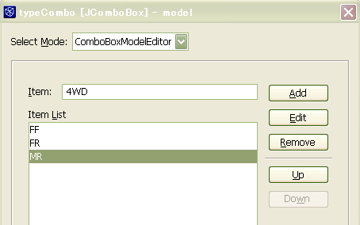
在 "Item:"（项：）字段中输入一个新项，然后单击 "Add"（添加）按钮。这很容易吧！我准备了 "FF"、"FR"、"MR" 和 "4WD" 项作为驱动类型。还要执行别的操作吗？
最后冲刺！在单击 "Send"（发送）按钮（名为 "sendButton" 的 JButton）时，就会执行在 MySQL 中插入数据的操作。
在 NetBeans 的 GUI 编辑器中，可以方便地为 JButton 生成事件处理方法。只需双击窗体上的 JButton 本身即可。
将在源文件中创建 "sendButtonActionPerformed" 方法。让我们按如下方式填充内容：
private void sendButtonActionPerformed(java.awt.event.ActionEvent evt) {//GEN-FIRST:event_sendButtonActionPerformed
// TODO add your handling code here:
String carid=idField.getText();
String name=nameField.getText();
String vendor=vendorField.getText();
String type=(String)typeCombo.getSelectedItem();
String insertStr="";
try{
insertStr="insert into cars (carid, name, vendor, type) values("
+quotate(carid)+","
+quotate(name)+","
+quotate(vendor)+","
+quotate(type)
+")";
int done=stmt.executeUpdate(insertStr);
commentLabel.setText("1 row inserted");
getContentPane().removeAll();
initComponents();
}
catch(Exception e){
commentLabel.setText("Error occurred in inserting data");
e.printStackTrace();
}
}//GEN-LAST:event_sendButtonActionPerformed
请注意，initComponents 方法是在插入数据并删除当前内容窗格后调用的。需要刷新 JTable 的外观...如果我更娴熟一些，我可能只刷新 JTable，而不是整个容器。这就是我们常说的“杀鸡焉用牛刀”。抱歉！
还要注意，此处调用了 quotate 方法。我创建该方法，以便不再需要输入这么多的引号：
public String quotate(String content){
return "'"+content+"'";
}
现在，我们完成了 InsertTable.java 的完整代码。
运行项目！输入数据，然后单击 "Send"（发送）按钮。现在，您可以看到刚才在 JTable 中插入的另一行。反复插入几行！

运行完成的应用程序
...让我们确保还可以从 NetBeans 的实用程序中查看这些数据。
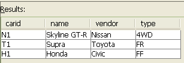
这是一项艰巨的工作！但通过此项目，我们学会了：
等等。